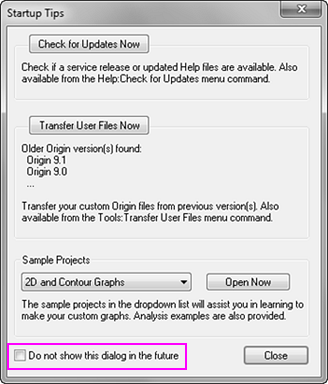
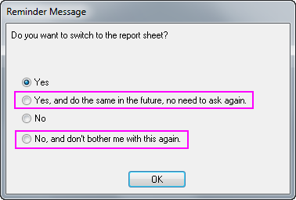
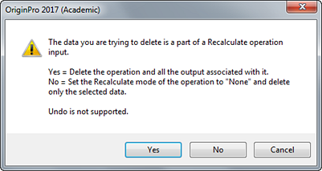

FAQ-883 Wie schalte ich den Dialog mit den Warnmeldungen aus?
Suppress-WarningMessage
Letztes Update: 13.07.2017
Origin bietet verschiedene Arten von Warnmeldungen (einschließlich praktischen Hinweisen), wenn Sie eine Operation durchführen, ändern oder löschen. Manchmal werden Ihnen diese Warnungen zu viel und Sie möchten sie ausschalten.
Dialog mit Optionen nicht erneut zeigen
- Einige Warnmeldungen enthalten unten ein Kontrollkästchen "Dieses Dialog nicht mehr zeigen". Sie können dies aktivieren, um diesen jeweiligen Warndialog zu deaktivieren.
- 
- Einige Warnmeldungen haben eine Option "Nicht erneut fragen", die im Fall einer Aktivierung zukünftig berücksichtigt wird.
- 
 |
In den beiden oben genannten Fällen können Sie die Warndialoge im Menü Hilfe: Hinweise wieder aktivieren wieder aktivieren.
|
Praktische Hinweise
- Um die praktischen Hinweise auszuschalten, lesen Sie bitte diese Seite in der Schnellhilfe. Um die praktischen Hinweise wieder zu aktivieren, wählen Sie im Menü Hilfe: Alle Hinweise wieder aktivieren.
Warnmeldung zum Löschen der Operation
- Wenn Sie eine Analyseoperation von einer Arbeitsmappe oder einem Diagramm aus löschen, wird ein Warndialog angezeigt, der nach einer Bestätigung für das Löschen fragt. Um diesen auszuschalten, setzen Sie die Systemvariable @DOM auf 1.
- 
- Wählen Sie Hilfsmittel: Systemvariablen festlegen im Origin-Menü.
- Geben Sie DOM für die Variable ein und setzen Sie den Wert auf 1.
Schlüsselwörter:grünes Schloss löschen, Warnmeldung ausschalten